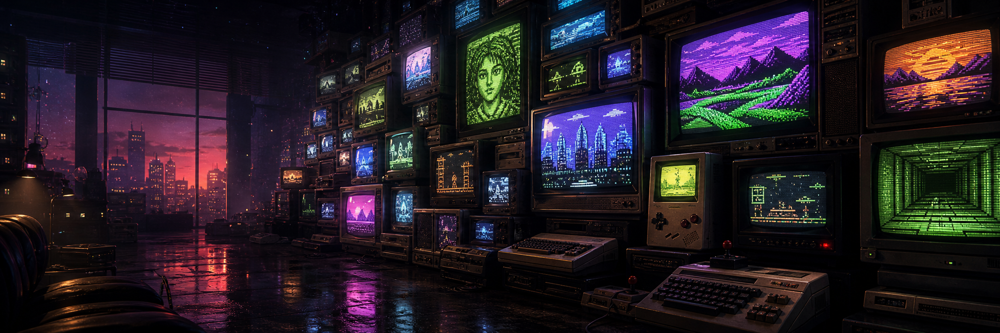

1977 — retro computing tools for macOS and the Apple IIgs
/RETRO.1977
- RETRO.TUBEAPPMAC
- BITPASTAPPMAC
- RETROBROWSEAPPMAC
- RETRO.TVAPPMAC
- RETRO.GFX.CONVAPPMAC
- 1977.ASCII.ARTAPPMAC
- GS.REMAPAPPMAC
- MEGACONVERTGSS16IIGS
- CONQUER.GSS16IIGS
]RUN RETRO.TUBE

Watch modern videos rendered live through real-time retro computer graphics — Apple II, Commodore 64, Game Boy, NES, MSX, CGA, and more. Stream from the Internet Archive or your own library.
1977
Native macOS apps and Apple IIgs programs by Walter Tengler, named for the year the Apple II shipped. Point at a name to see it; choose it to open its page.